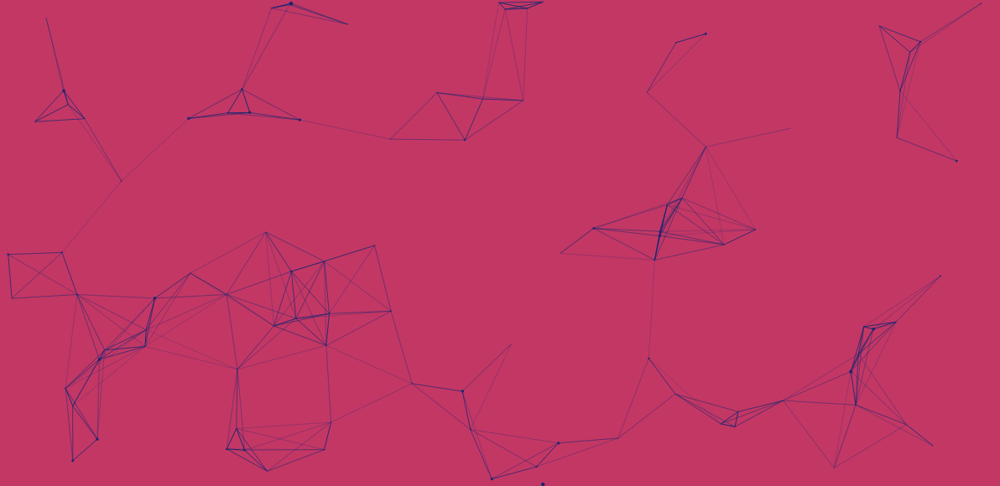

今天介绍一种非常重要的布局方式 FlexBox，它不仅在前端中应用广泛，同时在移动端也占有非常重要的地位，比如 iOS 中的UIStackView， Facebook 的 Yoga 库；微信小程序和 RN 都支持这种布局方式。各大浏览器对 FlexBox 支持比较完善，尤其对于移 Web，iOS 和 Android 在很早的版本中就支持了这种布局。所有我建议无论是移动端，还是泛前端的同学都应该学习一下这种布局方式。 很早以前，做小程序的时候我便开始接触这种布局方式，开始时主要看了网上几篇关于 FlexBox 布局的讲解，但是看完还是比较模糊， 我一直寻找比较官方的介绍，直到学前端的时候才找到了 MDN，看完 MDN 上的介绍使我对 FlexBox有了深刻的理解。 学习这种布局方式建议以官方文档为主，其它教程为辅。 这是我第 3 次写 FlexBox 布局教程，希望这次能把它写的更通俗易懂。理解 FlexBox 布局的关键点是理解它的「弹性」， 它可以通过父元素来控制子元素如何布局。比如通过一个 400*100 的flex容器（上文中的父元素），控制 3 个子元素的不同显示方式， 如果使用其它布局方式，会有这么简单吗？
